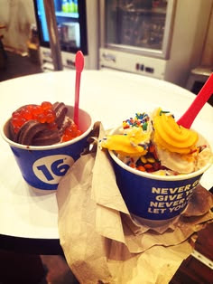
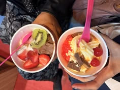

Why you should visit 16 handles!!🦄
16 handles is a froyo place with all of the most delicious flavors imaginable!

it has...
- mango sorbet
- pomegranite/strawberry sorbet
- cookie dough
- cookies and cream
- chocolate
- vanilla
- and so much more!
you can even swirl two flavors!

there are also many fun toppings!